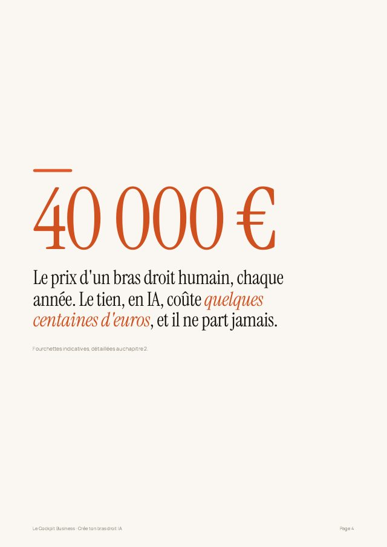
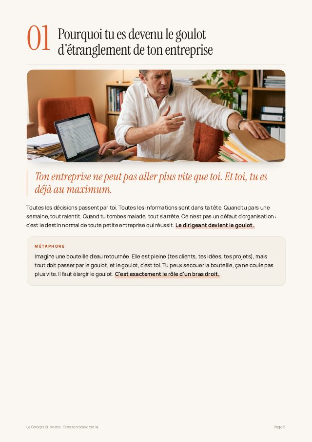
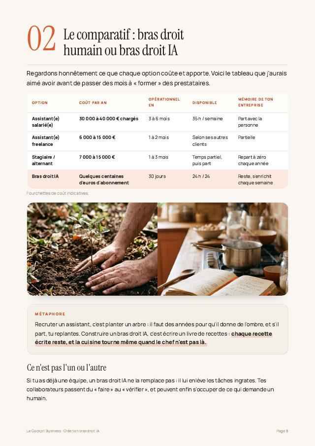
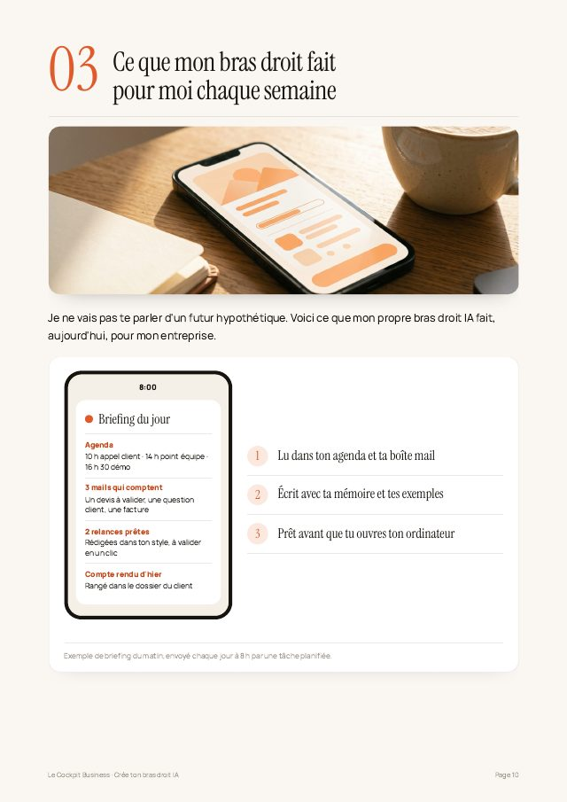
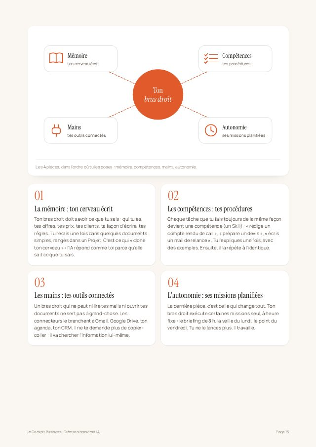
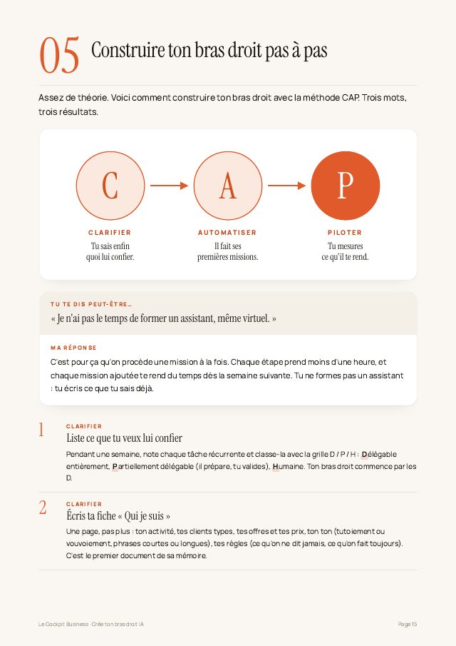
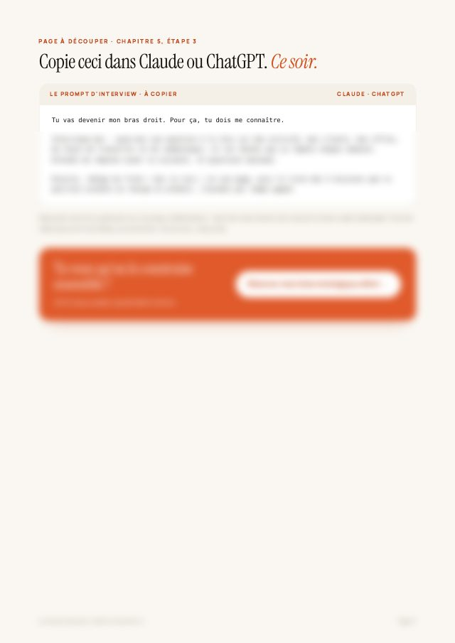
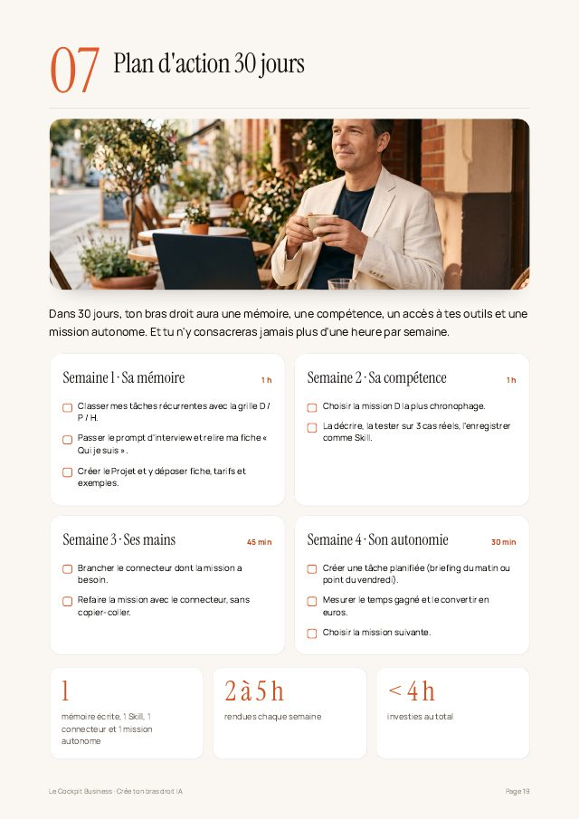

Jérémy B.
Architecte SI / Cloud, freelance
+10hpar semaine

Guide offert · valeur 47 €
Le collaborateur qui connaît ton entreprise par cœur, travaille pendant que tu dors et ne te coûte pas un salaire. Sans coder, en 30 jours.
Aperçu
21 pages concrètes : des chiffres, des cas réels, un prompt prêt à l'emploi et un plan d'action. Pas de théorie pour remplir.

Le chiffre qui fait mal
Chapitre 1
Chapitre 2
Chapitre 3
Chapitre 4
Chapitre 5
Le prompt offert 🔒 Le prompt complet est dans le guide
Chapitre 7+ le glossaire express et la page « Tu as les pièces, maintenant assemble ton bras droit ».
Dans le guide
Ils l'ont appliquée
Leurs messages, en entier
Jérémy B.
Architecte SI / Cloud, freelance
+10hpar semaine
Diane L.
Consultante IA et transformation digitale
+7hpar semaine

Michel Q.
Conseiller en gestion de patrimoine
+2h30par semaine

Tu préfères aller plus vite ?
45 minutes en visio : tu me décris ta semaine type, on choisit les missions à confier à ton bras droit IA et tu repars avec sa première mission. Que tu rejoignes Le Cockpit ou non.

Par Noé Porchier-Cizaire, fondateur du Cockpit Business. J'accompagne les dirigeants de TPE et PME qui veulent faire de l'IA un vrai levier, sans devenir développeurs. Plus de 85 entrepreneurs accompagnés avec la méthode CAP.